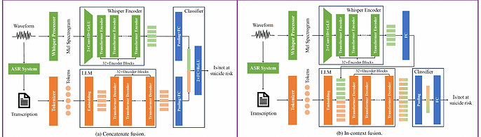

Speech-based suicide risk research

Project leaders
Chang Lei
Overview
Adolescent suicide constitutes a crucial matter that requires reliable and scalable risk assessment methods. Conventional tools for suicide risk detection typically lack objectivity, scalability, and precision. This is the first study to leverage large language models (LLMs) and speech analysis for suicide risk detection among adolescents. Our research explores the application of LLMs and speech analysis in assessing suicide risk among adolescents. In our study, we conducted suicide risk detection for 1,223 adolescents aged 10-18 years from 47 schools, using 10 different speech tasks. We employed Whisper for speech recognition and analyzed the transcriptions with LLMs, achieving an accuracy of 80.7% and an F1 score of 84.6% in detecting suicide risk. Notably, unstructured and open-ended tasks demonstrated superior predictive performance compared to structured tasks. Our findings suggest that LLMs, especially when applied to spontaneous speech tasks such as self-introduction, can significantly enhance the identification of adolescent suicide risk. This methodology supports scalable and objective screening in educational and clinical settings, reducing reliance on traditional evaluations. We are convinced that our findings will offer valuable insights into the domain of mental health and suicide prevention.
Reference：
Cui, Z., Lei, C., Wu, W., Duan, Y., Qu, D., Wu, J., Chen R & Zhang, C. (2024). Spontaneous speech-based suicide risk detection using whisper and large language models. arXiv preprint arXiv:2406.03882.